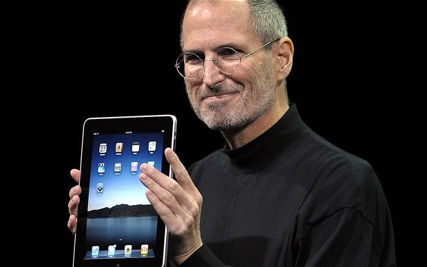

Ev Konsolları, Grafik Ön Planda Olan Bilgisayarlar, Ethernet Port’u
Steve Jobs’ın teknoloji dünyasına ilk katkısı Atari’de teknisyen olarak çalıştığı zamanlarda oldu. O zaman parasız bir genç olan Steve Jobs, Atari’nin popüler oyunu Breakout’un çiplerini hazırlamakla görevliydi. Hazırladığı her devre için 100 dolar alan Steve Jobs, Atari yöneticilerine bu sistemleri daha ucuz mâl edebileceğini iddia etti. Steve Jobs Teknolojiye Neler Kattı? Mevcut çip sistemini ufaltabileceğini düşünen Jobs, Apple’ın diğer kurucusu Steve Wozniak ile birlikte bu projeyi gerçeğe dönüştürdü. İşin sonunda Atari vadettiği 5 bin dolar yerine Jobs’a sadece 700 dolar verdi. Atari daha sonra bu prensibi kullanarak Breakout’un ev kullanıcılarına özel versiyonunu piyasaya sürdü. Aynı konsepti geliştiren firma ilerleyen yıllarda televizyona bağlanan konsolları hazırladı.
Steve Jobs Apple’ı kurduktan sonra sektörde çoğunlukta olan tek düze iş bilgisayarlarını değiştirmeye karar verdi. Jobs ilk Macintosh’u hazırlarken grafikler ve son kullanıcının dikkatini çeken yazım stilleriyle dolu bir bilgisayar hazırladı. Bu sistem 90’larda rakipler tarafından geliştirilerek günümüzdeki eğlence PC’lerinin ortaya çıkmasını sağladı.
Steve Jobs’ın Ethernet teknolojisinin babası olan Bob Metcalfe ile tanışması ikilinin hayatını değiştirdi. Metcalfe bilgisayarlar arasında ağ kurmayı sağlayan bu teknolojiyi insanlara yeterince iyi anlatamadığı için projesinin değeri anlaşılamamıştı.
Jobs, Metcalfe’ye destek verdi ve onun zamanın en iyi pazarlama uzmanlarıyla tanıştırdı. Steve Jobs’ın bu projeyi geliştirip NeXT bilgisayar şirketinde built in etherhet port’unu geliştirmesiyle birlikte internet için de ilk adım atıldı. CERN’deki uzmanlar bu teknolojiyi kullanarak internet’i kullanmaya başladılar. Jobs daha sonra ethernet’i kullanarak Toy Story filmini hazırladı ve Bob Metcalfe yapımın galasına onur konuğu olarak davet etti.
Bilgisayar Destekli Animasyon Filmleri, Şirket İçin E-Posta Sistemleri, Donanıma Özel Yazılım
Steve Jobs’tan önce animasyon sineması denilince akla gelen ilk firma Disney’di. Ancak Jobs Lucasfilm’den satın aldığı şirketi kendi icat ettiği bilgisayar destekli animasyon sistemini kullanmak için adapte etti.Grafik uzmanlarıyla birlikte gümümüzde Oscar’larda bile özel bir dal olan GCI animasyon teknolojisini geliştirdi. 97 yılında yayınlanan ilk Toy Story filmiyle birlikte, sinema ve animasyon dünyasında yeni bir dal oluştu. Bu yeni tür o kadar çok sevildi ki, ilerleyen yıllarda 2 boyutlu klasik animasyonların pabucu dama atıldı.
Steve Jobs, Apple’a karşı kurduğu NeXT bilgisayar şirketinde şirket çalışanlarıyla e-posta yolluyla iletişim kurmayı tercih ediyordu. Bugün her çalışan için normal olan bu durum o yıllarda hiç uygulanmamıştı.Daha yeni yeni tanınmaya başlayan e-posta teknolojisinin çok beğenen Steve Jobs, NeXT’te bu konuda özel bir departman bile kurdu. Jobs bu girişimleriyle günümüzdeki kurumsal yapıyı da oluşturmuş oldu.
Steve Jobs yazılımların gerçek gücünün donanımlarla daha ortaklaşa çalışmasıyla ortaya çıkacağına inanıyordu. Bu uğurda Jobs NeXT’i bilgisayar firmasından sadece yazılım üreten bir şirkete çevirdi.Apple’a geri döndüğünde ise MAC OS X’in yapılması için ilk projesini başlattı. Bugün, donanımlara özel yapılan ve onların performansını anlatan yazılımların ilk örneklerinden birini Steve Jobs geliştirmiş oldu.
"Hiçbir şeyi fazla ciddiye almayın. Hayatınızı yaratıcılığınızı kullanarak, bir sanatçı olarak yaşamak istiyorsanız, geçmişe fazla takılmamanız gerekir. Yeri geldi mi ürettiğiniz her şeyi, olduğunuz kişiyi, yani hepsini çöpe atmaya hazır olmak zorundasınız."
USB Fare, iTunes ve iPod, Akıllı Telefonlar
Steve Jobs’ın Apple’a geri dönüşünü simgeleyen ilk ürünlerden biriyse iMAC adlı bilgisayardı. Jobs bu bilgisayarda şu anda standart hale gelen USB fareleri kullandı.O dönemde farklı portlardan bilgisayara bağlanan fareleri USB’den kullanmak ise radikal bir karardı. Jobs bu projesini uygularken USB bilgisayarlarda o kadar da çok kullanılan bir port değildi.
Modern Apple’ın başlangıcı sayılan buluş ise iPod’tu. O sıralarda insanlar daha disk çalarları kullanırken Jobs, çok pahalı ve hafızası az olan MP3 çalarların kaderini değiştirdi.iPod bu konudaki ilk buluş değildi ama hem müzik piyasasını besledi hem de son kullanıcının istediği özellikleri bu üründe kullandı. iTunes’a bağlanan tüketiciler istedikleri parçaları cüzi ücretler sayesinde satın alarak korsan MP3 yüzünden can çekişen müzik piyasasına destek verdiler. İlerleyen yıllarda ise bu tarz müzik bulutları ve platformları sektörün standartı haline geldi. Firmalar ise MP3 çalar modellerinde çoklu medya oynatma desteğini standart olarak kullanmaya başladı.
iPod ile birlikte piyasadaki hakimiyeti artan Apple bir sonraki adımıyla günümüzdeki efsanevi ismine ulaştı. Piyasada bulunan akıllı telefon denemeleri yüksek fiyatları ve kaba tasarımlarıyla sadece ufak bir kullanıcı kitlesine hitap ederken, Steve Jobs iPhone fikrinin üzerinde çalışmaya başladı.Dokunmatik panel ve onun getirdiği avantajları dikkat çekici tasarımla birleştiren Steve Jobs, diğer önem verdiği projeyi de iPhone’a kattı.iOS desteği sayesinde, iPhone akıllı telefon pazarına bomba gibi düştü.Telefonun basit ara yüzü, çoklu medya desteği ve dokunmatik ekranı tüketicileri adete kalbinden vurdu. Kısa sürede satış rekorları kıran iPhone Steve Jobs’ın hayatı boyunca önem verdiği üç önemli fikrinde birleşimiydi. Taşınabilirlik, donanıma özel yazılım desteği ve dikkat çeken tasarımın ürünü olan iPhone bugün akıllı telefon pazarının yüzde 80’inine sahip.
 Steve Jobs IPad'in tanıtım sunumunu yaparken (27 Ocak 2010)Tablet Devri, Dokunmatik Fare
Tablet bilgisayar fikri Steve Jobs’a ait değil. Yaklaşık 20 yıldır çeşitli şekillerde piyasaya sürülen tabletler hiçbir zaman, mühendis ya da ressam gibi meslek gruplarından fazlasına hitap edemedi.Jobs ise göreve geldiğinde Apple’ın ürettiği Newton tabletleri iptal ederek başladığı altın çağına bu hatasını telafi ederek yön verdi.Kısa süre önce iPhone’da kullandığı sihirli formülleri iPad’te uygulayan Jobs ilk kez bir tablet cihazın tüm kullanıcılar tarafından sevilmesini sağladı. Büyük ekranı, oyun desteği gibi interaktif özellikler dışında Steve Jobs tablet cihazları özellikle iş dünyasında olmazsa olmaz bir yere getirdi.
Steve Jobs’ın son yıllara damgasını vuran bir diğer projesi ise bilinen fare tasarımını tamamen değiştirmek oldu. Dokunmatik bir yüzeye sahip olan Magic Mouse, kullanıcıların iPhone ve iPad’te yakaladığını çizim kolaylığını farelerde de bulmasını sağladı. Yavaş yavaş diğer firmalarında benimsediği bu teknoloji önümüzdeki yıllarda daha yaygın hale gelecek.